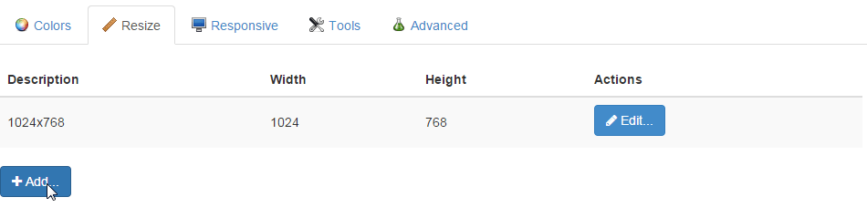

Sou fã de produtividade e, por isso, utilizo várias ferramentas que me auxiliam a ser mais produtivo - Vou citar outras em futuras postagens ;). Algumas delas são extensões para o Navegador, no meu caso o Chrome/Firefox, que eu uso o tempo todo para testes. Nesse post vou citar algumas extensões muito boas para desenvolvimento Front End
Para instalar alguma você pode clicar direto no sub-título e será direcionado para a Chrome Web Store. Se você estiver utilizando o Firefox, só pesquisar o nome dela no menu de instalação de Addons.
Web Developer
Essa extensão é monstra! Tem muita funcionalidade útil reunida em uma única ferramenta. Ao instalar essa extensão vá abrindo cada abinha e vendo do que ela é capaz, você vai pirar! Ela funciona no Chrome e no Firefox. Em outros navegadores eu não testei.

Uma dica para testar em diferentes resoluções:
Existem várias formas de testar a aplicação em diferentes resoluções. Com essa extensão você clica em Resize e muda conforme você pré definiu ou clicando em View Responsive Layouts. Para definir as dimensões personalizadas você vai em Resize e clica em Edit Resize Dimensions… e pode colocar como achar mais conveniente clicando em Add.

Ela já possui ferramentas para validar o HTML, CSS, Links e WAI-ARIA que você pode alterar clicando em Options, Options.

Frameworks
Com essa você vai ver as ferramentas que os sites que acessa estão utilizando como JQuery, Backbone, Angular, etc. Vai tudo aparecer no topo do seu navegador e basta acessar o site que já vai aparecer na barra de endereços.
Essa eu não testei em outros navegadores.

ChromeVox
É um leitor de telas para o Chrome, com ele você vai conseguir ter a experiência de como pessoas com necessidades especiais irão navegar em sua aplicação, podendo melhorar ainda mais a nossa Web!
Para ativar e desativar a extensão você vai no menu do Chrome, mais ferramentas, extensões e pode ativar ou desativar quando for efetuar os testes.

ColorZilla
Com essa você vai conseguir capturar cores em sites e testar também pela janelinha dela, como mostro na imagem abaixo:

Funciona no Chrome e Firefox.
WhatFont
Sabe quando você vê uma fonte maneira em um site, mas fica com preguiça de abrir o código fonte? Então, é só usar essa extensão que ela pega o nome da fonte pra você! ;D

PageSpeed
Excelente para testar a velocidade da página!
Para utilizar você vai abrir as Ferramentas de Desenvolvedor do navegador (F12) e clicar em PageSpeed.

Depois é só clicar em Analisar e a extensão vai trazer um relatório de todas as possíveis melhorias.
Funciona no Chrome e Firefox.
Fireshot
Essa é para quando você precisa de um print da página inteira. Seu uso é bem intuitivo e também funciona para Chrome e Firefox.

SEOQuake
É uma função nossa se preocupar com o SEO na página também e para isso da para se apoiar no SEOQuake. Quando você abre a página ele já carrega as informações importantes na tela:

E se você clicar em Info vai ver um relatório gigante sobre como deixar a página filé!
E você utiliza alguma outra extensão maneira? Comenta ai!